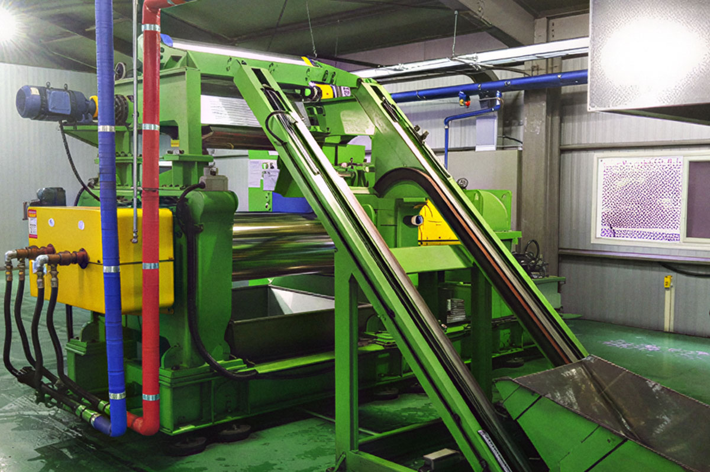

오랜기간 공정이 돌아가는 공장 내부는 먼지, 기름때, 화학물질 등 다양한 오염물질이 쌓이게 됩니다.이러한 오염물질들을 방치할 작업 환경을 악화, 안전사고의 위험 증가 등의 악영향을 미치기에 정기적인 관리가 필요합니다.
청소 작업으로 인한 작업 환경 개선
기계 및 설비의 정기적 청소
공장 내부 설비의 도색 작업
생산 라인의 정기적 청소
사진과 영상 갤러리에서 더 많은 청소 과정을 확인 할 수 있습니다.
공장
창고
사무실
기계실
배관
보일러실
공장 창고 / 공장 사무실 / 공장 기계실 / 배관실 / 보일러실 / 냉난방기 / 배수로 등 공장 내부 시설 전체
사진과 영상 갤러리에서 더 많은 청소 과정을 확인 할 수 있습니다.